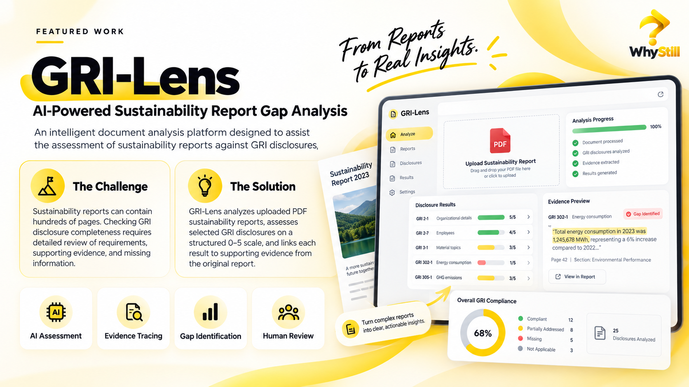

Question
Challenge existing processes and identify what can be improved.
DIGITAL & AI SOLUTIONS · BATAM, INDONESIA
We turn business challenges into practical AI applications, intelligent digital systems, document intelligence, and automation.
WHY STILL?
Why Still is a Digital & AI Solutions company focused on helping organizations move beyond outdated processes and build smarter ways of working.
Progress begins when we question what already exists, explore what could work better, and turn the answer into a practical solution.
Challenge existing processes and identify what can be improved.
Understand the problem and explore the right possibilities.
Turn ideas into practical digital products and AI-powered systems.
WHAT WE BUILD
We combine digital product development, Artificial Intelligence, and business process thinking to create solutions tailored to real organizational needs.
Custom AI assistants, intelligent applications, recommendation systems, and AI-enabled business tools.
Extract, analyze, evaluate, search, and understand information from complex documents.
Automated workflows that reduce repetitive tasks and improve operational efficiency.
Custom web applications, dashboards, portals, workflows, and internal business platforms.
AI opportunity assessment, solution design, feasibility analysis, and implementation roadmap.
HOW WE CREATE VALUE
Successful digital transformation is not about using more technology. It is about using the right technology for the right problem.
FEATURED WORK
AI-Powered Sustainability Report Gap Analysis — a showcase of document intelligence, evidence tracing, structured assessment, and human review.
GRI-Lens assists sustainability report assessment against GRI disclosures by analyzing uploaded PDF reports, identifying supporting evidence, highlighting missing or partial information, and providing suggested improvements.

HOW WE WORK
A clear, iterative process that moves from understanding the problem to improving the real-world solution.
Understand the business problem, workflow, users, data, and expected outcomes.
Translate the problem into requirements, user experience, workflow, and architecture.
Validate the idea quickly before investing in full development.
Build iteratively with continuous review and testing.
Prepare the solution for real-world use and help users adopt it.
Monitor, learn, refine, and continue improving the product.
WHERE WE CREATE IMPACT
We are particularly interested in environments where organizations handle complex documents, knowledge, repetitive workflows, and data-intensive decision processes.
AI assistants, academic systems, LMS intelligence, research tools, recommendation systems, and education automation.
Document assessment, sustainability reporting, compliance support, evidence extraction, and ESG intelligence.
Knowledge systems, document analysis, research assistance, internal automation, and decision-support platforms.
Workflow automation, internal AI assistants, dashboards, custom digital systems, and intelligent business tools.
WHY WORK WITH US?
WHY STILL VIEWPOINT
A space for practical AI, automation, digital transformation, and what we learn while building.
LET’S BUILD
Start with one challenge. Build one better solution.